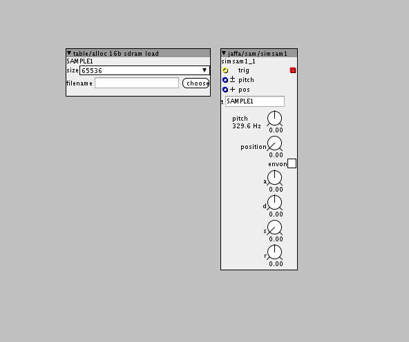

nice!! but we can do better!!!
Module requests
jaffasplaffa
#126
@SirSickSik if you are up for a request I'd like to request something like this delay from GRM-tools:
I build something similar in G2, but I kept running out of memory, because of the huge amount of delay lines. Maybe you have an idea about how to make something more efficient in Axoloti?

SirSickSik
#127
well, first of all, with such a load of (quite long) delaylines, you're bound to use 16bit array's or even 8bit.. otherwise you just won't be able to generate the needed delaylength. If I'm right, at 16 bit you should be able to create a total of 92 seconds of delaytime.
Next to this you will need lots of "readers" for the array to create all the delay-taps.
To save cpu, you should use both multiple "writers" as well as "readers", like I did in the "repeater" module. By summing the incoming signal into the array together with the value at that position in the array, you can pre-make a set of delays, which would sound in the normal way if you'ld only use one readout. But by using multiple readouts, the amount of delays will be multiplied with the amount of readouts. So having 5 "writers" and 5 "readers" you'll have 25 taps. Note though, that the first "writer" should "overwrite" the array, while the other should sum to it.
To make it complex.. to have a specific response, the write and read times should be spread such, that in combination they create the desired delay-times
eg when writers are spreaded given 1 sec difference for each tap and the readers are given 0.25s difference per tap, each having 2 taps, the times will be:
1s
1.25s
2s
2.25s
anyways, I think it's kinda possible to make, but it will be very hard to intuitively set the timings right...
Sebo
#128
Hi all, can anybody could make a version of:
factory/wave/play
but with pitch control (if it has an inlet for it, better).
Basically what I want is a simple sample player with pitch control and a string inlet to select the sample. So adding pitch control to the above module will be perfect.
Thanks in advance.
jaffasplaffa
#129
Did you try the table/play pitch object?
For a simple sample player with pitch, its imo good enough 
Besides that I actually already made a simple sample player called jaffa/sam/simsam1, with pitch and a build in adsr envelope
Sebo
#130
I was aware of this module, but didn't know that was possible to assign the sample that way.
Thank you!
jaffasplaffa
#131
You have to load the file into a table first. I think this is the simplest way to set that up:

for this to work it is important that you give the table/alloc 16b sdram load object a name. And then after given the name, write the exact name into the object reference. In this case "SAMPLE1".
Sebo
#132
In the help patch you use the table/load module that have the string inlet so I can change the sample dinamically, I think I would do it that way...
But I have a few concerns, as I'm short of recurses, if I turn off the envelope, will it consume extra DSP?
Also, as the samples have different lenghts, and I will use up to 8 at the same time, what size should I choose for the alloc module? I think that choosing a size as big as the biggest sample will be fine...
jaffasplaffa
#133
Yeah I also prefer that way, its much better, so yeah go with that if you want to change files dynamically. And the table you see in the help patch also has a build in "bleeep" silencer. Without that build in, you will hear an anoyying BLEEEEEP every time you change sound. With this specific table version you get silence instead of bleeep.
No there wil be no change when utning on/off the envelope. The envelope uses very very little, DSP, so dont worry too much about that.
Here is a list of what the different tablesize are equivalent to:
8192 = 0,17066666666667 seconds
16384 = 0,34133333333333 seconds
32768 = 0,68266666666667 seconds
65536 = 1,36533333333333 seconds
131072 = 2,73066666666667 seconds
262144 = 5,46133333333333 seconds
524288 = 10,92266666666667 seconds
1048576 = 21,84533333333333 seconds
2097152 = 43,57816666666667 seconds
4194304 = 87,38133333333333 seconds
Since you want to load many samples, you should probably only assign the table size needed for each sample. And you need to use a different table for each sample . Dont use bigger tables than you need in general, since you have kind of limited resources.
Sebo
#135
I tried that set of modules and they worked, but I'm having a problem.
As the samples have different lenghts, when I load a long sample and then I load a shorter one, the short one don't "erase" the diference in lenght, so I hear the short sample plus the remaining of the long sample...
jaffasplaffa
#136
Yup that is a real problem. I don think there are any objects that clears out a tables content, but I am not sure.
Try make a post about it or go through the ever growing commuity library, maybe you find some thing there
EDIT:
But one could argue that the envelope is there to prevent playing more of the files than you need. You could use the timer/pulselength object as in the helpfile to make sure the gate/adsr only is open when the part of the file you want is playing.
lokki
#137
one way to avoid that would be to load a silence sample in between, but that will take some time. don't know if you have that 
Sebo
#138
I think that I could load a silent sample in between, like lokki said, or make all samples the same lenght (adding silence to the shorter ones), both solutions are a bit complicated for what I trying to do...
Basically I created some directories in my SD card with about 200 drum samples I like. And I want to use that samples in whatever project I want to use them.
I did a drum machine with 8 sample players, and I want to select one of the samples on the fly. With the object factory/wave/play it's working great, but for some of the samples I want pitch control, and there is when things gets complicated...
Also I have to note that I'm going to use this drum machine inside other projects, so I'm trying to keep the use of resources low to keep room for synth, FXs, etc...
Thank you for your answers
Sebo
#139
Well, finally I ended loading a silent sample between samples. Didn't take much more processing and is fast enough... If the sample is playing I can hear a glitch when changing samples (did't happen with neither the other configurations), but I think a can live with that.
Thank you very much for the help!
SirSickSik
#140
looking at the table load/save modules, I now see there are options to set "offset" and length.
So I think it should be possible to make a "loading train" that loads the samples one by one into a table (names like drum000,drum001 etc), taking notice of the length and saving the start/end-positions in a second table (last write position plus 1 is start position, end position is read from start-position of next sample minus 1). Though, I need to know how to get the length of a file that's being read to declare the "load length".
From there it should be easy to mod, morph and do anything with your samples..
SirSickSik
#142
alas, he saves the sample length of a sample that is being recorded and saves that into the table/an extra table, he doesn't get the samplelength from the file itself.
But I'm pretty sure I saw some code somewhere where this is actually done.... but where...?
wow, aaaand again... asking the question to kind of immediatly know the anwser.. drj's preset manager...
it's: f_size( &FileObject )
jaffasplaffa
#143
Hey. Dr justice have made a seperate object for getting file size in samples. I implemented it into a table. Works fine. It has got a trigger function implemented, so when you load a new file when the patch is live, the table will send the new information to the filesize object.
drj/file/file_size
SirSickSik
#144
kinda had it working for a moment, but suddenly somehow it disconnects while loading the patch 
gotta go to work now, so maybe tomorrow..